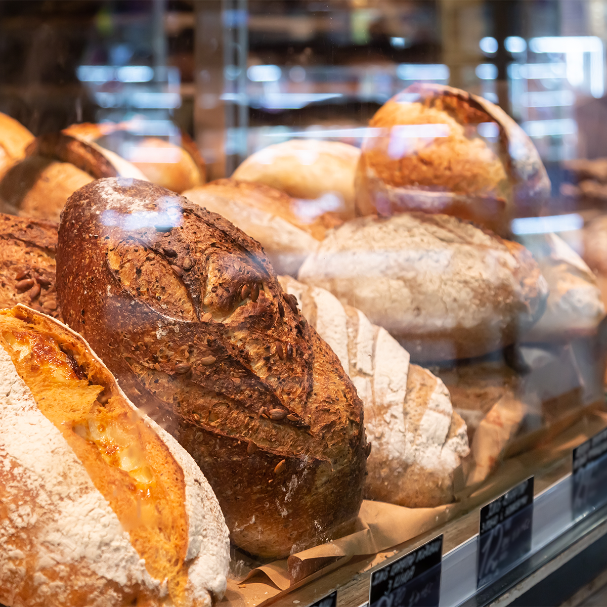

Country Sourdough
A sourdough loaf with a crisp crust and soft center. Most loaves cost $6 to $9.
A sourdough loaf with a crisp crust and soft center. Most loaves cost $6 to $9.
A whole wheat loaf with a small amount of honey. Most loaves cost $5 to $8.
Croissants, muffins, scones, and seasonal choices. Individual pastries cost about $3 to $6.

Cakes are available by preorder in several sizes and flavors. Prices start around $30 and can change based on size and requested details.

For larger orders or cakes, use the contact page and include your preferred pickup date.